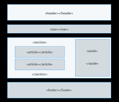
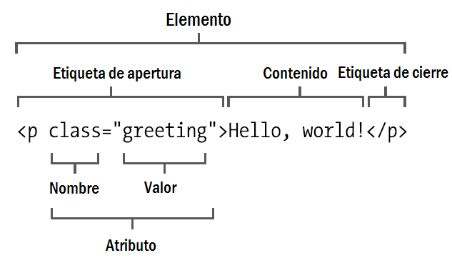

Propósito del sitio
El proposito de este sitio, es reforzar o dar conocimiento sobre Etiquetas Básicas de HTML,
atributos y valores, los cuales nos sirven para que una persona pueda leer el contenido de un sitio sin
que sea necesario compilarlo primero. En otras palabras, el texto en una página web está «marcado» con
estos códigos para dar instrucciones al navegador web sobre cómo mostrar el texto. Estas etiquetas de
marcado son las propias etiquetas HTML.
Etiquetas Básicas de HTML

Las etiquetas básicas de HTML son fragmentos de texto que se usan para dar propiedades específicas
al texto cuando escribimos en código html.
Éstas se caracterizan porque van dentro de los caracteres menor que < y mayor que >.
Debido a que deben tener un inicio y un fin, el inicio de una etiqueta es normal, en otras
palabras lleva los dos caracteres mencionados y dentro de estos se encuentra el nombre, sin
embargo, existe una diferencia para el fin de la etiqueta ya que antes de escribir el nombre
de la etiqueta debemos escribir una diagonal "/".
Digital Cubik, 2020, ETIQUETAS BÁSICAS DE HTML recuperado de https://digitalcubik.com/diccionario-marketing-digital/e/etiquetas-basicas-de-html/
Atributos y valores

Son valores adicionales que configuran los elementos o ajustan su comportamiento de diversas formas para cumplir los criterios de los usuarios.
Los atributos HTML van siempre dentro de la etiqueta de apertura y sirven para modificar o agregar alguna característica al contenido.
Lista de los atributos más usados en HTML
li Id =” ”: Para identificar un elemento único.
class =” ”: Identificador múltiple.
align =” ”: Alineación de contenido.
border =” ”: Para darle borde al contenido.
style =” ”: Para darle un estilo al contenido.
background-color =” ”: Para color de fondo.
href =” ”: Para enlaces html.
height =” ”: Para determinar altura.
width =” ”: Para determinar ancho.
src=“ ”: Para imágenes.
MDN contributors, 14 sept 2021, Referencia de Atributos HTML, recuperado de https://developer.mozilla.org/es/docs/Web/HTML/Attributes
Desarrolladoresweb.org, julio 8, 2019, Atributos en HTML, recuperado de https://desarrolladoresweb.org/html/atributos-html/